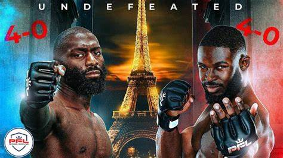

Cedric Doumbe est un talentueux combattant français de kickboxing et de muay-thaï, largement reconnu pour son style flamboyant et sa personnalité charismatique dans le monde des sports de combat. Né le 9 novembre 1992 à Paris, en France, Doumbé a acquis une renommée internationale en tant que champion du monde poids welter de la GLORY Kickboxing, une des plus grandes organisations de kickboxing au monde.

Cedric Doumbe combat pour l'organisation PFL depuis 2023 et sont palmarès de combat est d'avoir était 7 × Glory World Welterweight Champion (2016-2017, 2019-). WAKO World Middleweight Champion (2016). WKA World Middleweight Champion (2014). WKA European Middleweight Champion (2013). Carrière en arts martiaux mixtes Superkombat Fighting Championship (2022).